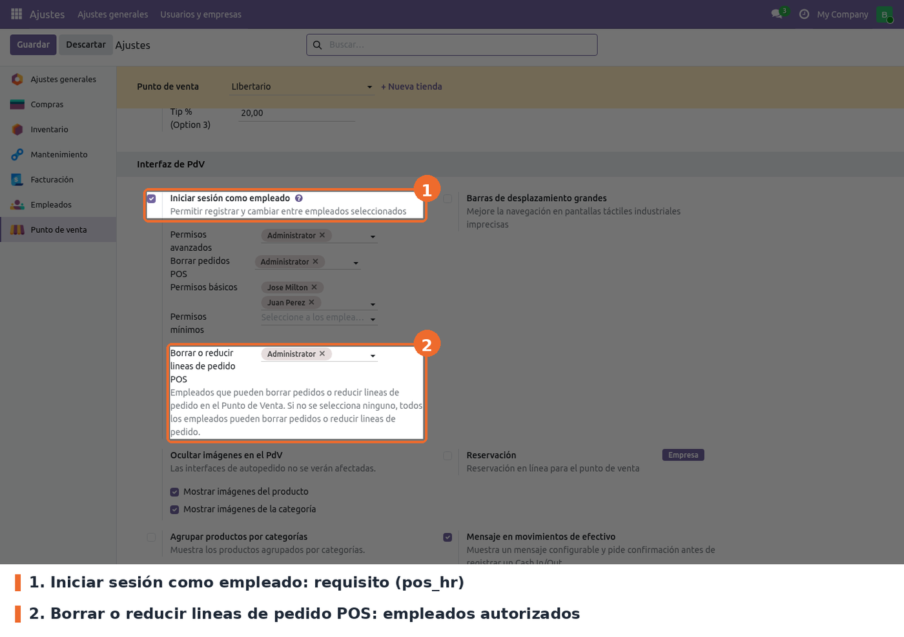
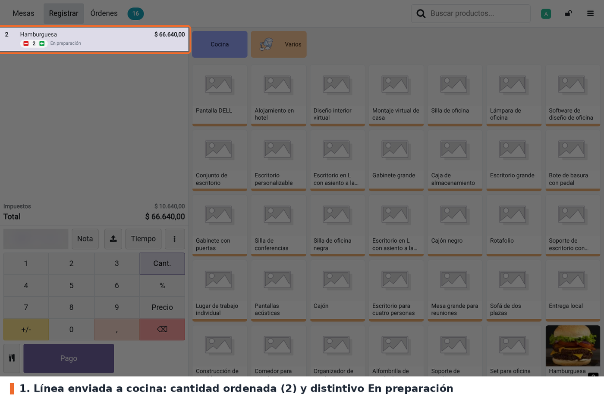
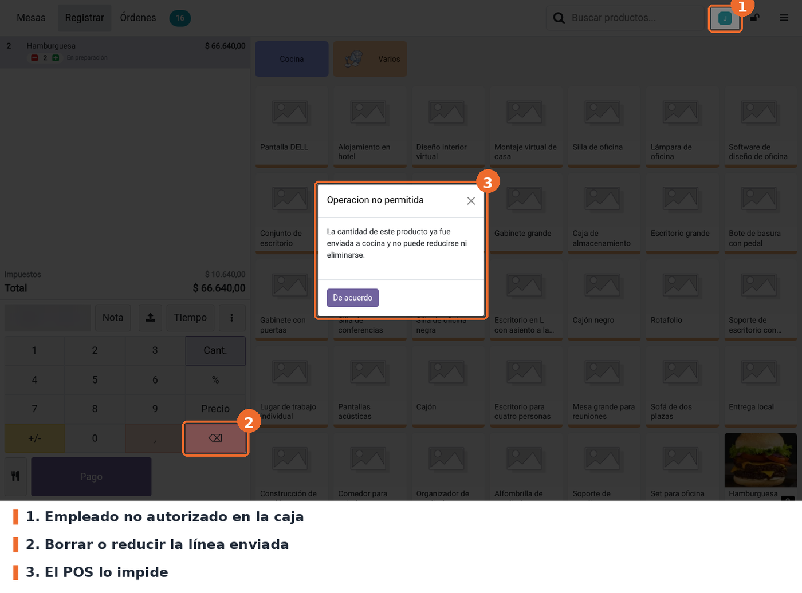
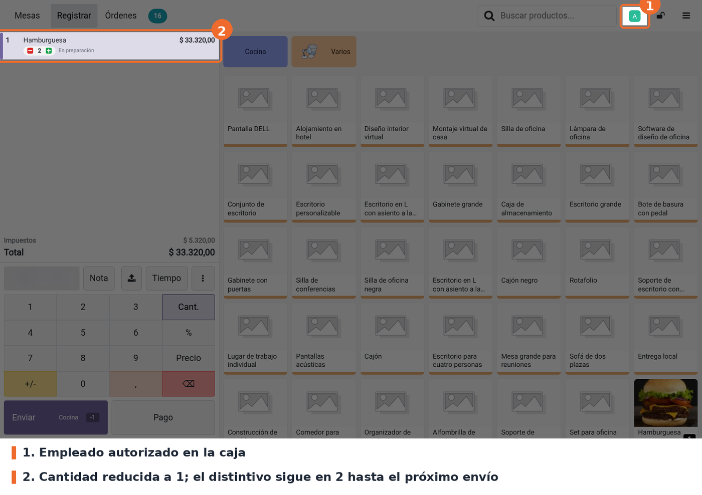

Impide que un empleado no autorizado reduzca o borre una línea de pedido del Punto de Venta después de enviarla a cocina. Cada punto de venta tiene una lista de empleados autorizados. Si el empleado que tiene la caja está en la lista, puede reducir o borrar líneas como siempre. Si no está, el POS rechaza la acción con el aviso Operacion no permitida.
Existe para que un mesero no pueda quitar de la cuenta un producto que la cocina ya está preparando sin pasar por el líder de tienda.
Cada línea enviada muestra su cantidad ordenada con el distintivo En preparación y dos botones para restar o sumar una unidad. Aumentar la cantidad siempre está permitido. Con la lista vacía, todos los empleados pueden reducir y borrar líneas.
Está pensado para puntos de venta de tipo restaurante (depende de pos_restaurant).
pos_restaurant (Odoo Community), que trae point_of_sale. No hay dependencias externas ni
librerías de Python adicionales.pos_hr no es dependencia del módulo, pero hace falta en la práctica: el campo de Ajustes solo se
ve con Iniciar sesión como empleado activo, y el control se evalúa sobre el empleado que inició
sesión en la caja.Instalar el módulo desde Aplicaciones. No crea modelos ni permisos de acceso: agrega un campo a la configuración del punto de venta, un campo a las líneas de pedido y los archivos del POS. Después de instalar o actualizar, hay que volver a entrar al POS desde el backend para que cargue los archivos nuevos.
Los campos conservan el nombre técnico y la tabla de relación de Odoo 17:
able_del_pol_employee_ids en pos.config (tabla abl_pol_employee_ids) y ordered_quantities
en pos.order.line. La lista de empleados autorizados y las cantidades ordenadas de las órdenes
existentes se mantienen sin script de datos.
El archivo models/pos_session.py de 17 ya no existe: en Odoo 19 cada modelo declara sus campos
para el POS en _load_pos_data_fields. El archivo security/ir.model.access.csv de 17 tampoco:
se refería a un modelo de otro módulo y el manifiesto de 17 no lo cargaba.
Ir a Punto de venta › Configuración › Ajustes, elegir el punto de venta en la parte superior y buscar el bloque Interfaz de PdV.

Punto de venta › Configuración › Ajustes › Interfaz de PdV: Iniciar sesión como empleado y Borrar o reducir lineas de pedido POS
pos_hr). Requisito. El campo del módulo
solo aparece con esta casilla marcada y guardada, y el control usa el empleado que inició sesión
en la caja.able_del_pol_employee_ids de pos.config).
Opcional; vacío por defecto. Lista de empleados de la compañía que pueden reducir o borrar líneas
ya enviadas a cocina. Vacío significa que todos pueden.A tener en cuenta:
pos_del_order.Al pulsar Enviar (o Pago, ver Casos especiales), el POS guarda la cantidad actual de cada línea como cantidad ordenada. Al volver a la mesa, cada línea muestra esa cantidad entre los botones de restar y sumar, con el distintivo En preparación.

Línea enviada a cocina con su cantidad ordenada y el distintivo En preparación
Con un empleado que no está en la lista, cualquier intento de dejar la línea por debajo de la cantidad ordenada muestra el aviso Operacion no permitida y la línea no cambia. Aplica a la tecla ⌫ del teclado numérico, a escribir una cantidad menor con el teclado y al botón de restar del distintivo.

Empleado no autorizado: al pulsar ⌫ sobre la línea enviada, el POS lo impide
Sumar unidades está permitido. Las unidades agregadas después del envío, mientras no se vuelva a enviar, se pueden quitar hasta llegar otra vez a la cantidad ordenada.
Con un empleado de la lista, la línea se reduce o se borra como en el POS estándar. Odoo registra la diferencia como un cambio pendiente para cocina (el botón Enviar muestra Cocina -1).

Empleado autorizado: la cantidad baja a 1 y el distintivo conserva la cantidad ordenada
El distintivo sigue mostrando la cantidad ordenada anterior hasta el próximo Enviar, que la actualiza con la cantidad nueva.
ordered_quantities es
escribible y quien envíe la orden por RPC puede cambiar cantidades o borrar líneas. Si el POS no
terminó de cargar, el módulo deja pasar la acción.PosStore.pay() guarda las cantidades ordenadas
antes de que pos_restaurant pregunte si se envía el pedido, así que Descartar no lo evita. En
Odoo 17 el botón de pago llamaba a order.pay() y no marcaba líneas: es un cambio de
comportamiento de la migración.setQuantity,
removeOrderline y updateQuantityNumber. No quedan restringidos: Transferir / Fusionar mesas
(si la línea se suma a otra existente, la cantidad ordenada de origen no se suma), Cancelar orden
y Liberar la mesa (eliminan la orden entera; para eso está pos_del_order) ni la división de
cuenta.getCashier() devuelve el
usuario (res.users) y el módulo compara su id con ids de empleados. El campo se oculta en Ajustes
en ese caso, pero el valor guardado se conserva y sigue aplicando.pos_del_order._t pero el módulo no trae archivos de
traducción. El título Operacion no permitida va sin tilde.static/description/icon.png mide 750x750 px; la norma pide 100x100 como los módulos del core.models/pos_config.py: el campo able_del_pol_employee_ids (Many2many a hr.employee, tabla
abl_pol_employee_ids).models/res_config_settings.py: el campo relacionado pos_able_del_pol_employee_ids, escribible,
que usa la pantalla de Ajustes.models/pos_order.py: el campo ordered_quantities de pos.order.line y su alta en
_load_pos_data_fields para que viaje al POS y se guarde al sincronizar.views/res_config_settings_views.xml: la fila de Ajustes, dentro del bloque
multiple_employee_session de pos_hr.views/pos_order_view.xml: la columna opcional Ordered Quantities en las líneas de la orden.static/src/js/models.js: parches de PosOrderline.setQuantity(), PosOrder.removeOrderline()
y OrderSummary.updateQuantityNumber(), y la regla isCapableToDeletePosOrderLines().static/src/js/pos_store.js: parche de PosStore.submitOrder() y PosStore.pay() que guarda las
cantidades ordenadas, y expone el store a los modelos (posRestrictState).static/src/js/split_bill_screen.js: parche de SplitBillScreen.createSplittedOrder().static/src/js/orderline.js, static/src/xml/orderline.xml, static/src/css/orderline.scss: el
distintivo En preparación con los botones de restar y sumar.ordered_quantities, no un concepto de Odoo. No
coincide con uiState.savedQuantity (cantidad sincronizada) ni con
last_order_preparation_change (lo que Odoo ya notificó a cocina).updateQuantityNumber hoy no se ejecuta. Ese camino solo se usa cuando
PosStore.disallowLineQuantityChange() devuelve true; en Odoo 19 Community devuelve false y
ningún módulo de Community lo cambia. Queda como defensa si se instala uno que lo active.ActionpadWidget.submitOrder() a
PosStore.submitOrder(), la división de proceed() a createSplittedOrder(), y el aviso de
ErrorPopup a AlertDialog. En 19 setQuantity devuelve el error y quien la llama muestra el
diálogo; el borrado con ⌫ va directo a removeOrderline, por eso hay dos parches.res_config_settings_view_form_inh_pos_del_order_17)
viene de 17 y menciona pos_del_order, pero pertenece a este módulo. No renombrarlo sin revisar
el efecto en la actualización.